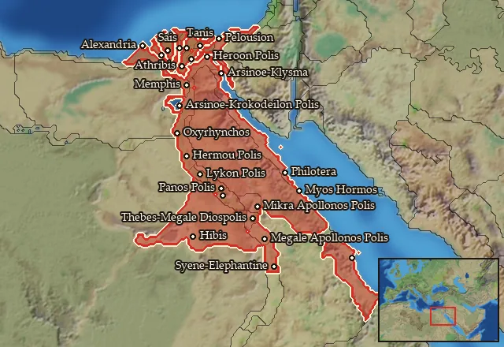

RTR: Imperium Surrectum
RTR: Imperium SurrectumEgypt
← all mercenary pools · wiki index
Mercenary pool: 6 units for hire in 26 regions.

Mercenaries
| Unit | Cost (dn) | Experience | At start | Most in pool | Added per turn | Who can hire | |
|---|---|---|---|---|---|---|---|
| Mercenary Karian Light Infantry | 3,268 | 0 | 1 | 2 | 0.0808–0.1616 | Any faction | |
| Mercenary Lycian Hoplites | 3,244 | 0 | 0 | 1 | 0.0814–0.1628 | Any faction | |
| Mercenary Libyan Skirmishers | 2,746 | 0 | 0 | 1 | 0.0962–0.1923 | Any faction | |
| Mercenary Machimoi Archers | 4,335 | 2 | 1 | 2 | 0.1142–0.2284 | Any faction | |
| Mercenary Cretan Archers | 5,097 | 2 | 1 | 1 | 0.0518–0.1036 | Any faction | |
| Mercenary Machimoi Cavalry | 3,819 | 1 | 0 | 1 | 0.0691–0.1383 | Any faction |
Regions (26)
Apollonopolites-Latopolites Nomoi · Arabike Aigyptos · Arsinoites-Aphroditopolites Nomoi · Athribites-Leontopolites Nomoi · Boreia Trogodytike · Boubastites-Arabia Nomoi · Erythra Thalassa · Gynaikopolites Nomos · Hermopolites-Kynopolites Nomoi · Heroon Kolpos · Heroopolites-Heliopolites Nomoi · Koptites-Tentyrites Nomoi · Lykopolites-Hypselites Nomoi · Memphites-Letopolites Nomoi · Mendesios-Diospolites Kato Nomoi · Menelaites-Prosopites Nomoi · Ombites Nomos · Oxyrhynchites-Herakleopolites Nomoi · Panopolites-Antaiopolites Nomoi · Pelousiake · Peri Thebas-Pathyrites Nomos · Prote Oasis · Saites-Xoites Nomoi · Sebennytes-Bousirites Nomoi · Tanites-Sethroites Nomoi · Thinites-Diospolites Mikros Nomoi